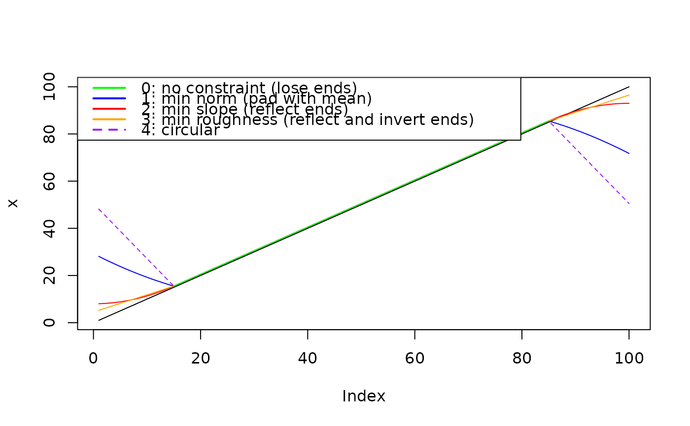

Filter time series
ApplyFilter.RdApply a given filter to a time series using different endpoint constraints.
Source
The endpoint constraint methods are based on the study:
Michael E. Mann, On smoothing potentially non‐stationary climate time
series, Geophys. Res. Lett., 31, L07214, doi:10.1029/2004GL019569, 2004.
Arguments
- data
numeric vector with the input timeseries (standard or ts object).
- filter
numeric vector of filter weights.
- method
single integer for choosing an endpoint constraint method; available choices are integers 0-4, see details.
- na.rm
logical; control the handling of internal NA values in
data. If set toTRUE, any internal NA values are removed by linear interpolation from the neighbouring values; defaults toFALSE.
Details
Note that when passing objects of class ts, the time step provided is
not used; thus, for time series with a time step different from 1, the filter
has to be adapted accordingly.
Leading and trailing NA values are automatically stripped from the input
vector so that they do not spread into the filtered data when applying the
endpoint constraints, but added in again after filtering so that the output
vector has the same length as the input. This does not apply to any internal
NA values, which instead are handled by na.rm.
The function applies endpoint constrains following Mann et al., GRL, 2004; available methods are:
method = 0: no constraint (loss at both ends);
method = 1: minimum norm constraint;
method = 2: minimum slope constraint;
method = 3: minimum roughness constraint;
method = 4: circular filtering.
Examples
# Simple running mean filter across three bins
x <- 1 : 10
filter <- rep(1 / 3, 3)
# no endpoint constraints lead to loss at both ends
ApplyFilter(x, filter, method = 0)
#> Time Series:
#> Start = 1
#> End = 10
#> Frequency = 1
#> [1] NA 2 3 4 5 6 7 8 9 NA
# circular filtering avoids end losses, so as the other methods
ApplyFilter(x, filter, method = 4)
#> Time Series:
#> Start = 1
#> End = 10
#> Frequency = 1
#> [1] 4.333333 2.000000 3.000000 4.000000 5.000000 6.000000 7.000000 8.000000
#> [9] 9.000000 6.666667
# leading and trailing NA's are ignored but added in again afterwards
x <- c(NA, 1 : 10, NA)
ApplyFilter(x, filter, method = 4)
#> Time Series:
#> Start = 1
#> End = 12
#> Frequency = 1
#> [1] NA 4.333333 2.000000 3.000000 4.000000 5.000000 6.000000 7.000000
#> [9] 8.000000 9.000000 6.666667 NA
# ... but not internal NA's
x <- c(1 : 5, NA, 7 : 10)
ApplyFilter(x, filter, method = 4)
#> Time Series:
#> Start = 1
#> End = 10
#> Frequency = 1
#> [1] 4.333333 2.000000 3.000000 4.000000 NA NA NA 8.000000
#> [9] 9.000000 6.666667
# if not explicitly removed by linear interpolation
ApplyFilter(x, filter, method = 4, na.rm = TRUE)
#> Time Series:
#> Start = 1
#> End = 10
#> Frequency = 1
#> [1] 4.333333 2.000000 3.000000 4.000000 5.000000 6.000000 7.000000 8.000000
#> [9] 9.000000 6.666667
# Visual comparison of methods ----------
set.seed(20220302)
x <- PaleoSpec::SimPowerlaw(1, 1e02)
x <- x + 0.1 * (1:length(x))
filt <- rep(1/30, 30)
plot(x, type = "l")
x0 <- ApplyFilter(x, filt, method = 0)
lines(x0, col = "Green")
x1 <- ApplyFilter(x, filt, method = 1)
lines(x1, col = "blue")
x2 <- ApplyFilter(x, filt, method = 2)
lines(x2, col = "red")
x3 <- ApplyFilter(x, filt, method = 3)
lines(x3, col = "orange")
x4 <- ApplyFilter(x, filt, method = 4)
lines(x4, col = "Purple", lty = 2)
lines(x0, col = "Green")
legend(x = "topleft",
legend = c("0: no constraint (lose ends)",
"1: min norm (pad with mean)",
"2: min slope (reflect ends)",
"3: min roughness (reflect and invert ends)",
"4: circular"),
col = c("Green", "Blue", "Red", "Orange", "Purple"),
lwd = 2, lty = c(1,1,1,1,2))
# Repeat with linear trend, no noise
x <- 1:100
filt <- rep(1/30, 30)
plot(x, type = "l")
x0 <- ApplyFilter(x, filt, method = 0)
lines(x0, col = "Green")
x1 <- ApplyFilter(x, filt, method = 1)
lines(x1, col = "blue")
x2 <- ApplyFilter(x, filt, method = 2)
lines(x2, col = "red")
x3 <- ApplyFilter(x, filt, method = 3)
lines(x3, col = "orange")
x4 <- ApplyFilter(x, filt, method = 4)
lines(x4, col = "Purple", lty = 2)
lines(x0, col = "Green")
legend(x = "topleft",
legend = c("0: no constraint (lose ends)",
"1: min norm (pad with mean)",
"2: min slope (reflect ends)",
"3: min roughness (reflect and invert ends)",
"4: circular"),
col = c("Green", "Blue", "Red", "Orange", "Purple"),
lwd = 2, lty = c(1,1,1,1,2))
